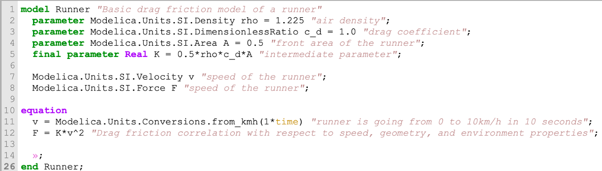
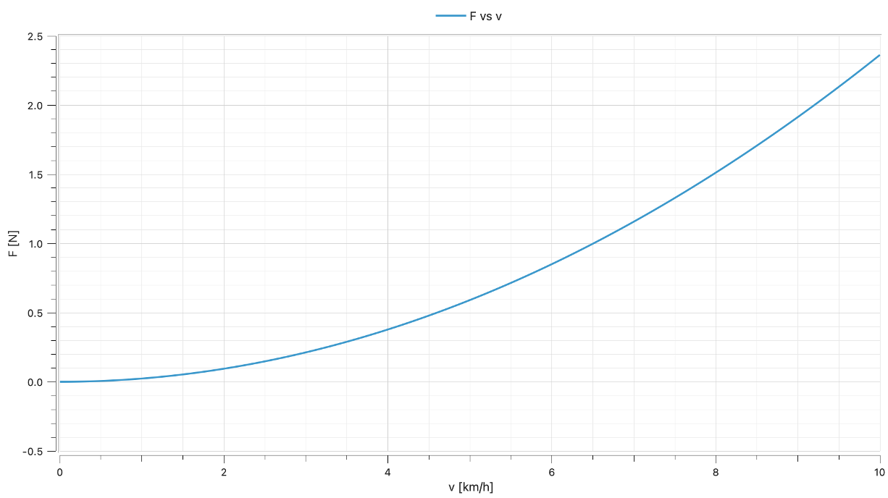
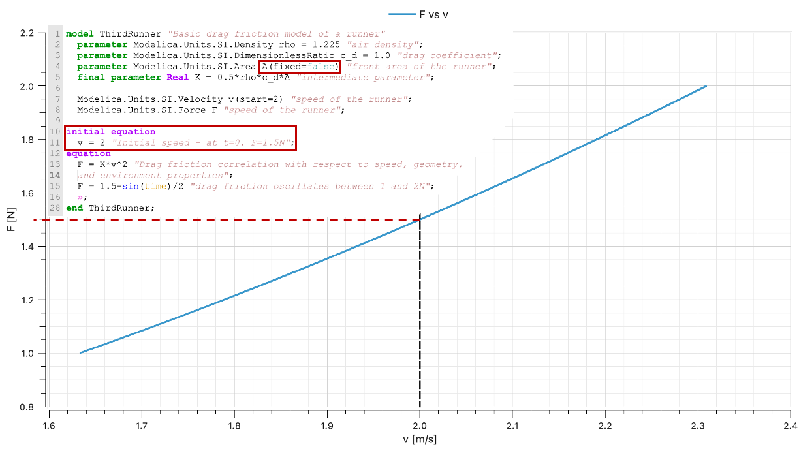

Acausality, the secret service of Modelica

I hope you’ve got your preferred drink in hand ☕️🫖💧
Today, we are at the 007 article of this series - the James Bond article… We need some kind of Secret Agent story! So we are covering one of the key capabilities of the Modelica language: acausality. You’ll see, it is like a super agent with lots of gadgets, solving a lot of our problems!
Acausa… what?
Yep, that’s exactly what most of the people think. And to be fair, you have to search quite a bit on the internet to be sure that I did not make up this word.
In a nutshell, acausality is the lack of causality. 🙄 Feel free to thank me in the comment for this one… And for my defense, it is true! We just need to discuss causality first. Causality is in its general definition the “relation from cause to effect”. But what does it mean for us, in the modeling and simulation world? It means more specifically the definition of inputs and outputs - the inputs causes the effects on the outputs. A causal model shall receive its input(s) in order to compute its output(s).

So an acausal model is a model for which inputs and outputs are not defined at first. Based on the variables that you provide, the model is “turned around” to solved for the remaining variables. Acausality is the property - here of a model or a language - to be acausal.
Note: this image is NOT representing a block diagram. Block diagrams are NOT causal by default. Some are (e.g. Simulink) and some aren’t (e.g. Modelica.Blocks). This is just a schematic here.
Why is that useful?
Let’s step back and look at a single equation:
1. F = (1/2 * rho * c_d * A) * v^2This is the typical friction F (units [N] ) of a body of surface A [m^2] evolving at a given speed v [m/s] in a fluid of density rho [kg/m^3]. (c_d is the unitless drag coefficient and is function of how aerodynamic the body is.)
Note that I put all parameters in brackets so that we can easily see that the two variables F and v are related by a set of parameters. We can just create a new parameter K = (1/2 * rho * c_d * A) (with units [N/(m/s)^2]) and we end up with F = K * v^2.
For our example, let’s consider that we are healthy engineers and we like to go for a run from time to time. If you don’t, you should. If you don’t want to… please bear with me as this is today’s example. Oh, and the speed is the relative to the wind speed and here we will just consider the wind to be 0 - because our focus is on the (a)causality only.
Speed control
Let’s say you have a watch tracking your speed and you start slowly increasing your speed until 10km/h. That’s a convenient speed because you’ll unlikely get a speed ticket at this pace. So you know the speed and can compute the force you’ll have to face when running at this speed. (We should not forget to convert the units!)
Below is a simple Modelica model, written in code (we are slowly introducing parts of the Modelica language here) and the simulation result.

We see that the Modelica code is quite readable: - The model starts with model ModelName (here the ModelName is Runner) and ends with end ModelName; - Then we have different types of variables: 1. The variables which value will not change during the time simulation are called parameters and are identified by a keyword parameter. Here I need to stop for a second and expand on this. Modelica makes a difference between constant and parameter. A constant has the value specified once before compilation and the value cannot change. The parameter can get its value changed until the simulation starts. (This last sentence is still partly incorrect as there are differences between structural and non-structural parameters, but let’s keep that for later.) 2. The variables which value can change during the simulation. These are time variable and do not have such a keyword that precedes them. - Here we specified the “type” of the parameters and variables with their units, that are available in the Modelica Standard Library (we often refer to it as MSL). But behind, these are all Real with specific units. - Note that we could define a final parameter, which basically freezes how the parameter is computed from the others. You cannot overwrite its definition later on when using this model. - Finally, we have an equation section where we write the time relationships of our variables - (And the small a on line 14 hides a lot of graphical and dependency annotations that I could have removed but I wanted to keep them so you know they exist. No need to dig into these now)
There is something to highlight here: we have two (2) variables and thus have two (2) equations 🤔 This is trivial and yet, needs to be noted. Variables are unknowns. They need to get values from the model. So here, we specify the speed of our runner and then we specify the relationship between force and speed. Naturally, we expect the simulation to compute first the speed and then the force, from the speed and all parameters. This happens and gives us this nice parabolic curve:

Now, this looks like a causal model that takes the speed as “input” and “outputs” the force. You could say I am cheating and put the equations in the right order and form. Let me show you something else.

I have now reshuffled the equations: the order is different and the force/speed relationship is also turned around. The model simulates perfectly fine and behaves identically. This is no problem. Modelica can change the order of the equations and turned them around as needed, as the language is acausal.
May the force be with you!
Now what happens if the speed is NOT known? You might NOT run with a watch telling you your current speed (or you might have one and not car about it). Or you are facing a uphill part of your track and cannot make it to the 10km/h because you are putting the bulk of your energy into going uphill.
Note: and this latter example shows that, intuitively, it is NOT enough to just model your friction for measuring your effort, you obviously need the ground inclination, your weight etc. Just saying to bring back in mind the topic of “what’s your modeling goal”. And here, we don’t mind because we focus on (a)causality only. But obviously, running is not just about fighting 2N of front force…
You might actually just “feel” how much effort you want to put. And let’s assume that the force you put in fighting the aerodynamic drag oscillates between 1N and 2N. Then the Modelica model changes slightly: only the equation section, the speed is no more specified and the force is.

Now this should be quite impressive. The compiler understands that the line 12 specifies the force F; there is no dependence on speed, only on time. Therefore it will have to manipulate equation 11 to solve the speed from the computed force from line 12.
Let me say decompose that again. The compiler is able to 1. turn the equations around to solve for the right variable (causalization) and 2. reorder them (sequencing).
1. F = 1.5 + sin( time ) / 2
2. v = sqrt( F / K )We will see this in more detail in a next article. Keep in mind the words 🙂
What’s my body surface?
Already, you might understand now the power of acausality. The models are made of the equations that describe the system - the physics you want to model -, and the compiler can manipulate them to solve for your specified problem.
But it is not stopping here with Modelica! You can additionally find out parameter values if you specify the values of all variables (at initial time). So for the equation F = K*v^2, if F and v are known at initial time, the compiler will find out that value of K, and if all the parameters composing K are known but one (let’s say the area A), then this one will be found out! 🤯

For this to work, we needed to do two things: add an initial equation AND relax the parameter - i.e. saying its value is unknown - by using the construct fixed=false. In practice, below is what the resulting equations look like at initial time.
At initial time:
1. F = 1.5 N
2. v = 2 m/s
3. K = F / v^2
4. A = K / (0.5 * rho * c_d)Note: we are touching the idea of a “square system” of equation. Let us just say here at loud that we need for a system to be solvable to have as many unknown as the number of independent equations. We will reinforce this concept in the near future.
A philosophical note…
I want us to wrap things up here with a bit of a philosophical note: causality is not physical. Some even call it “computational causality”. Causality is a step to be able to solve the computational problem. There is no causality in nature.
The END for today
Enough for today. Next time, we will see how to use this concept for a larger system and in the graphical user interface.
Break is over, go back to what you were doing.
Clem
Next ->
Bonus: resources for fast learners
© 2025 Clément Coïc — Licensed under creative commons 4.0. Non-commercial use only.